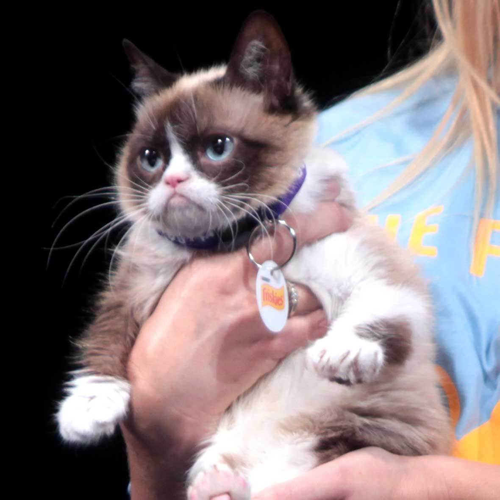

 Grumpy Cat
Tardar Sauce (born April 4, 2012), commonly known as Grumpy Cat, is a cat Internet and media personality and actress. She is known for her permanently "grumpy" facial appearance, which is caused by an underbite and feline dwarfism.
Tardar Sauce (born April 4, 2012), commonly known as Grumpy Cat, is a cat Internet and media personality and actress. She is known for her permanently "grumpy" facial appearance, which is caused by an underbite and feline dwarfism.